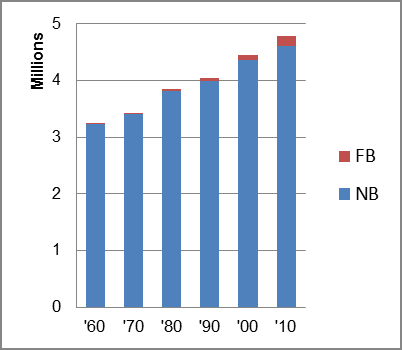
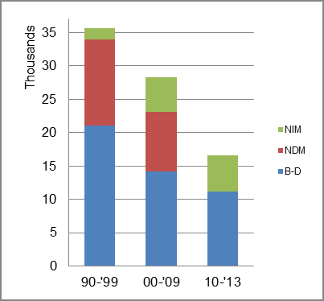
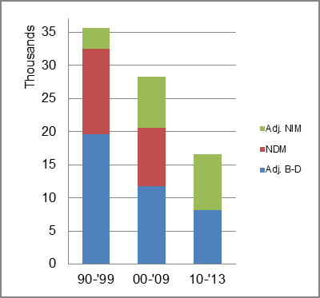

The foreign-born (FB) population increased from 14,955 in 1960 to 168,596 in 2010. That was an increase of 1027.4 percent. The foreign-born share changed from 0.5 percent to 3.5 percent.
The share of the overall population that was native-born (NB) increased by 42.5 percent.
Alabama: Population 1960-2010 
The first chart below shows the three population change factors for three periods adjusted for annual average amounts. Natural change (B-D) was the primary factor in adding population in all periods
The second chart shows the same data but with an adjustment to reflect births to immigrants shifted to NIM. In it, B-D remained the primary factor in adding population in the first two periods, but NIM surpassed it in the most recent period.
Alabama: Sources of Population Change 1990-2014 Alabama: Sources of Population Change (Adjusted) 1990-2014  
B-D NDM NIM B-D NDM NIM 90-'99 59.0% 36.4% 4.6% 90-'99 54.6% 36.4% 9.0% 00-'09 50.4% 31.2% 18.5% 00-'09 40.7% 31.2% 28.1% 10-'14 61.1% 5.1% 33.7% 10-'14 41.5% 5.1% 53.4%